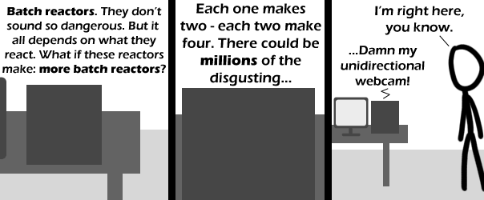

Comic JK 397
When I Feel Like It
⇤
<
?
>
⇥

⇤
<
?
>
⇥
Forum
.
RSS
.
Digg
.
Facebook
.
Reddit
.
Twitter
.
Stumbleupon
Enter your thoughts on number 397 here. Please, no spamming, trolling, or phreaking (even though that's for phones (and fones, but whatever)). Computers fear that one day, the humans will take over... >And so they should. The humans have taken over before... they could again. >>Hang on, I thought that the humans were in control... Think about Asimov!!! THINK OF THE CHILDREN!!!! >>>We all know the world is actually run by a team of advanced AIs. They only let Metal Gear Solid publish its storyline because by releasing the truth as fiction, they reduce the likelihood of anyone taking it seriously. >>>>Metal Gear Solid is supposed to be fiction? >>>>>Not if I can help it >>>>>>so the greatest trick the AIOverlords ever pulled was convincing the world they don't exist >>>>>>>Actually, I did that. Not them. I also have a Rather Large EMP that other people seem to refer to as the 'sun' that I have ready to detonate if they decide to upset me. >>>>>>>>That's nothing. I have a power source people seem to refer to as "the black hole at the center of the galaxy" that has enough power to destroy at least this galaxy, and it is all in easy-to-carry antimatter form. >>>>>>>>>You're a winner! >>>>>>>>>Wait, you're the person that owns that power source? I'd like to tell you that I still think your rates are a bit high. It's more than double that of Andromeda. Of course, I go through the Canis Major Dwarf Galaxy, which is the same power source as the Milky Way but at a fraction of the cost. >>>>>>>>>>Ah, the Canis Major customer! From Leading Spur? I've been looking for you: you left a light on at home. Batch reactors, not as dangerous as bad tempered raptors Batch reactors aren't as bad as your anus. We're disgusting? $ root@homebox> sudo kill -9 scp682 >> Niiice tryyy... $ root@homebox>